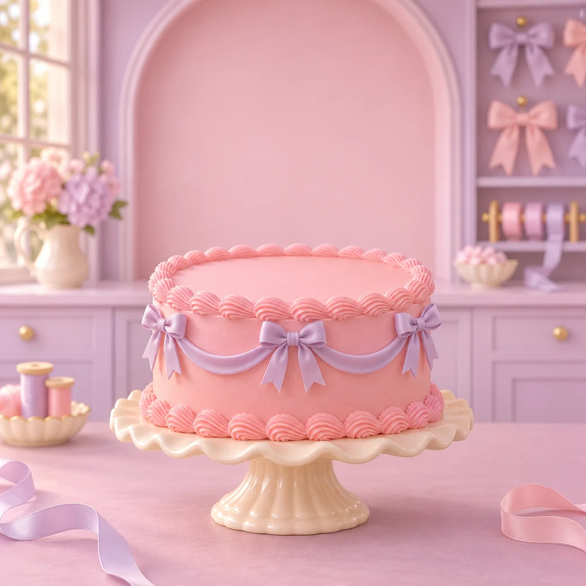

Роденден во бутикот на Мини
Стефи полни две!
Две свеќички, една желба и место за тебе!

Замисли желба и допри ги двете пламенчиња!
Те чекаме во
Игротека Kinder Park
Почнуваме во 17:00
Кеј 13 Ноември 4а, Скопје
Роденденска програма
Ајде на игра!
- 17:00Добре дојдовте, другарчиња!Се собираме и ја започнуваме забавата.
- ИграПотрага по машничкиШарени игри за сите дечиња, и мали и големи.
- ТортаДуваме две свеќичкиЍ пееме на Стефи и заедно замислуваме желба.
- ДискоСите на подиум!Детско диско со музика и весели чекорчиња.